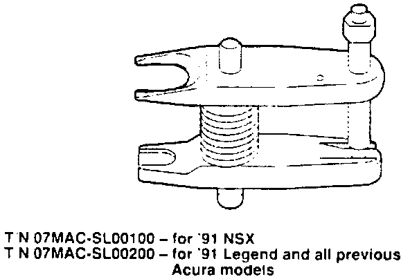
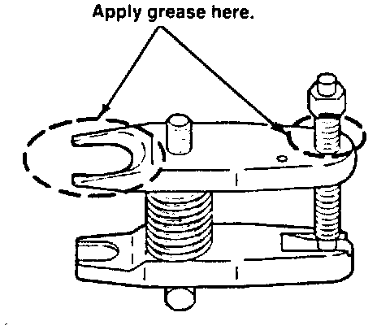
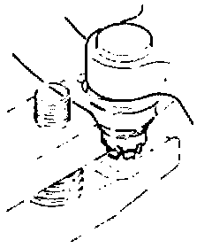
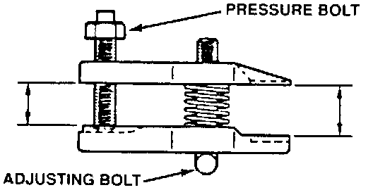
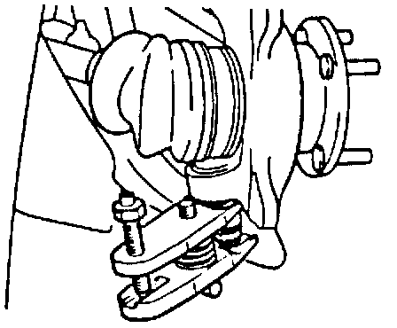

Usage Instructions For New Ball Joint Tools
December 17, 1990BULLETIN NO.
90-027
YEAR
ALL
MODEL
ALL
VIN APPLICATION
ALL
Usage Instructions for New Ball Joint Tools

Tool number 07MAC-SL00200 replaces Ball Joint Remover 07941-6920003, Tool number 07MAC-SL00100 does not replace any other tool.
Use it to separate a ball joint from its suspension or steering arm as follows:
CAUTION:
Wear eye protection. The ball joint can break loose suddenly and scatter dirt or other debris in your eyes.
1. Clean any dirt or grease off the ball joint.
2. Remove the cotter pin, then unscrew the nut until it's flush with the end of the threads on the ball joint. This will help prevent damage to the threaded end of the ball joint.

3. Apply grease to the areas shown. This will ease installation of the tool and prevent damage to the pressure bolt threads.

4. Insert the tool as shown. Be careful not to damage the ball joint boot. If the tool jaws won't fit over the ball joint. unscrew the pressure bolt until they do.

5. Once the tool is in place. turn the adjusting bolt as necessary to make the jaws parallel. Then hand-tighten the pressure bolt and re-check the jaws to make sure they are still parallel.

6. With a wrench, tighten the pressure bolt until the ball joint shaft pops loose from the steering suspension arm.
7. Remove the tool. then remove the nut from the end of the ball joint and pull the ball joint out of the steering/suspension arm. Inspect the ball joint boot and replace it if damaged.